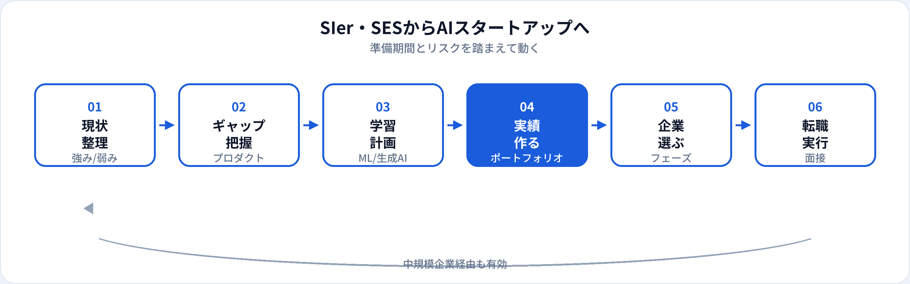

大手SIer・SESでJavaや保守開発を経験したエンジニアが、AIスタートアップへ転職したい——そんな相談は増えています。一方で、客先常駐の仕様変更対応中心の経歴だけでは、プロダクト志向のAI企業の選考で「何を自分で作ったか」を説明しにくいことも少なくありません。本記事では、SIer・SESで育つ強み、ギャップ、リスク、転職ルート、企業の選び方を2026年6月時点で整理します。
なぜAIスタートアップを狙うのか
AIスタートアップは、LLMアプリ、業界特化SaaS、MLOpsツールなど、技術選定からプロダクト成長まで一気通貫で関われる環境が多いです。SIer・SESで感じる「仕様通り作るだけ」「上流に届かない」もやりがいのなさを、プロダクト開発で解消したい動機は理解しやすいです。
ただしスタートアップは不確実性とスピードが前提です。転職は「AIが好き」だけでなく、報酬・生活・キャリアのトレードオフを理解したうえで判断するのが現実的です。
SIer・SESで育つ強み
大規模システムの理解
障害対応、リリース手順、品質管理。本番運用の厳しさは、AIサービスの安定化でも活きる。
顧客・要件調整
曖昧な要望を仕様に落とす経験。B2BのAIプロダクトではヒアリング力が差別化になる。
インフラ・運用
クラウド移行、監視、バッチ処理の経験はMLOps寄りポジションと相性がよい。
業界ドメイン
金融・公共・製造などの客先経験は、垂直SaaS型AI企業で評価されやすい。
足りないスキルとギャップ
| 領域 | SIer・SESで不足しがち | スタートアップで求められること |
|---|---|---|
| プロダクト思考 | 客先仕様どおりの実装 | ユーザー課題から逆算した優先度付け |
| AI/ML実装 | API連携やPoC経験のみ | 学習・評価・推論パイプラインの説明 |
| 技術選定 | 指定スタックでの開発 | トレードオフを説明した選定 |
| オーナーシップ | 役割分担が細かい大規模チーム | 少人数で端から端まで担う |
| Git・コード品質 | 属人化した修正、レビュー文化の薄さ | PRベースの開発、テスト |
補強の参照先
知っておくべきリスク
| メリット | リスク・デメリット |
|---|---|
| 裁量と成長スピード | 資金繰り・レイオフの不確実性 |
| 最新技術への接触 | ベース給与の下落や変動 |
| ストックオプションの上振れ | SOが紙切れになる可能性 |
| プロダクト成果が見えやすい | 休暇・福利厚生の手薄さ |
生活防衛資金（目安として6〜12か月分）と、家族構成・住宅ローンの有無を踏まえた判断が重要です。
転職ルート（3パターン）
| ルート | 概要 | 向いている人 |
|---|---|---|
| 中規模AI企業経由 | シリーズA以降や上場準備企業でML実装を経験し、その後シードへ | リスクを段階的に取りたい |
| 事業会社のAI部門 | メガベンチ・大手ITのAIラボ、事業会社DX部門で実績を積む | 安定しつつAI実装を学びたい |
| 直接スタートアップへ | ポートフォリオと副業実績を武器に、シード〜Aの企業へ | 学習済みで即戦力を示せる |
いきなり10人未満のシード期へ飛び込むより、一度プロダクト開発の型を身につける経由の方が、長期的に見て成功しやすいことが多いです。
転職準備の流れ

準備期間の目安
週10〜15時間の学習・副業を想定。学習ロードマップと併用してください。
-
0〜3か月：現状棚卸しとPython
業務で触れた技術を整理。Python基礎とG検定でML用語を体系化。
-
3〜6か月：ML/生成AIの実装
推論APIまたは簡易RAGを個人開発。README付きで公開。
-
6〜9か月：応募と面接
中規模企業・事業会社AI部門と並行して応募。フィードバックでポートフォリオ改善。
-
9か月〜：スタートアップ選定
実績をもとにフェーズ・報酬・技術スタックを比較して入社。
AIスタートアップの選び方
「AI」を名乗る企業でも、実態はコンサル・受託開発のみの場合があります。次を確認しましょう。
職務経歴書・面接での伝え方
職務要約の例
「大手SIerで金融系基幹5年。障害対応とリリース管理を経験。退職前に信用スコアリングのPoCを個人開発し、Python・scikit-learnで再現可能に公開。」
面接で話す軸
①なぜスタートアップか ②SIerで得た強み ③個人/副業で作ったもの ④入社後90日でやること。
避けたい話し方
「SIerが嫌だから」だけ。ネガティブ動機より、プロダクト・技術への具体的意欲を。
よくある質問
SIer・SES出身でもAIスタートアップに転職できる？
可能です。ポートフォリオとプロダクト志向の実績を用意し、中規模企業経由のルートも検討してください。
準備期間はどのくらい必要？
週10〜15時間なら6〜12か月が目安です。業務でPythonやクラウドに触れていれば短縮できます。
年収は下がる？
ベースが下がる場合もあれば、SOで総合が上がる場合もあります。生活設計に合わせて下限を決めてください。
SESのままAI案件に行くのとどちらがよい？
AI常駐は学習機会になり得ますが、裁量や成果物の説明は限られることも多いです。個人ポートフォリオの併用を推奨します。
他の転職ガイドはある？
文系からAI職へ、製造業からAIエンジニアへなど業界別ガイドも公開しています。